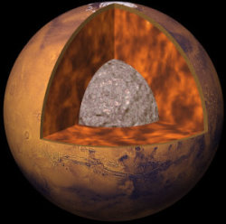

Mars est l’une des 4 planètes telluriques (ou rocheuses) du Système solaire. Plus froide que la Terre, la température moyenne à sa surface est de -67°C. On l'appelle la « planète rouge » car sa surface rocailleuse et désertique est recouverte d'une poussière riche en oxyde de fer de couleur rougeâtre. On y trouve également de nombreux volcans très élevés et de profonds canyons. Mars possède 2 petits satellites naturels connus : Phobos (d’un diamètre d’environ 22 km, en orbite à 9 400 km) et Deimos (d’un diamètre d’environ 13 km, en orbite à 23 500 km de Mars).
L’atmosphère de Mars est composée à 96% de dioxyde de carbone (CO2), 2% d’argon (Ar), 1,9% d’azote (N2 et NO), et les 0,1% restants correspondent à des traces d’oxygène, de monoxyde de carbone, de vapeur d’eau et d’autres gaz. La pression atmosphérique varie selon le cycle complexe de condensation et de sublimation des glaces des pôles. Elle reste cependant très faible par rapport à celle de la Terre (moins de 1%)
L'orbite de Mars est considérablement elliptique, ce qui a pour effet des variations de la température d'approximativement 70°C entre l'aphélie et le périhélie. Cela a une influence majeure sur le climat de Mars. Pendant que la température moyenne sur Mars est approximativement de 210 K (-63°C), les températures peuvent aller de 140 K (-133°C) en hiver à 270 K (-3°C) pendant l'été.
Jusqu'en 1965, on pensait que de l'eau liquide se trouvait à la surface de Mars et que des formes de vie similaires à celles existant sur Terre pouvaient s'y être développées. Les variations saisonnières d'albédo à la surface de la planète étaient attribuées à de la végétation, tandis que des formations rectilignes perçues dans les lunettes astronomiques et les télescopes de l'époque étaient interprétées comme des canaux d'irrigation traversant des étendues désertiques avec de l'eau issue des calottes polaires. Le survol des premières sondes a mis fin à ces croyances. Toutefois, le 25 juillet 1976, Viking 1 photographie des structures semblant artificielles dans Cydonia Mensae dont un visage gigantesque et des pyramides. Simple effet d'ombre et de lumière, la sonde
STRUCTURE
La structure interne de Mars demeure pour en grande partie inconnue. Le petit noyau de la planète rouge serait encore partiellement liquide et probablement composé de fer et d’autres matériaux plus légers, comme du sulfure de fer.
Moins dense que le noyau, Le manteau serait principalement composé d'olivine et de pyroxènes, des minéraux riches en fer et en magnésium. La croûte forme une enveloppe, composée de roches volcaniques. Sa surface, recouverte de poussière rouge, porte les traces d’un passé mouvementé marqué par l’activité volcanique, l’écoulement de cours d’eau, l’érosion et les impacts de météorites.
On trouve d’innombrables cratères d’impacts essentiellement dans l’hémisphère sud. Ils sont moins nombreux dans les plaines volcaniques plus jeunes de l’hémisphère nord. Une longue et profonde faille, Valles Marineris, s’étend, elle, d’Ouest en Est .
Les pôles de Mars sont en permanence recouverts de calottes glaciaires composées de glace d’eau et de glace de gaz carbonique. Le pôle Sud est plus élevé donc plus froid et sa calotte est plus riche en neige carbonique saisonnière. La calotte du pôle Nord, un peu moins froid, est quant à elle plus riche en glace d’eau.